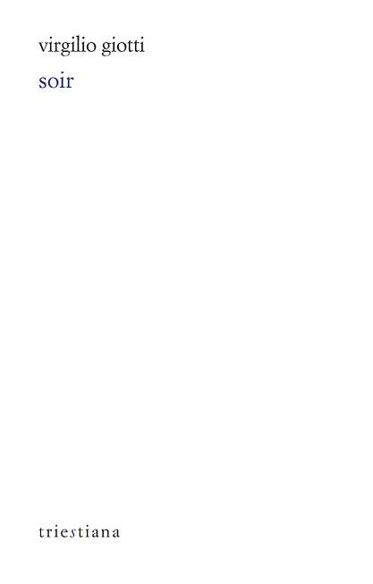

Virgilio Giotti, Soir
Maître du dialecte triestin, de ses couleurs et de son rythme, Virgilio Giotti (1885-1957) réunit dans Soir les vers qu’il compose entre 1943 à 1948, alors que ses deux fils sont au front, que l’un y meurt et que l’autre n’en revient pas. Ce recueil, bouleversant, le plus court, est aussi son plus dense : seize titres seulement, qui dialoguent et se nouent. Des traits élégiaques demeurent, ainsi que quelques paysages, miroir de l’âme en peine. Mais s’y dessinent surtout la maison et la famille qui l’habite, ses joies simples d’antan, ses regards de plus en plus nostalgiques et ses malheurs à vif, comme un patrimoine humain de sentiments et de morale que préserve le poème.
Date de parution : octobre 2024
Traduit du triestin par Laurent Feneyrou et Pietro Milli
ISBN : 2841627616
160 pages
Prix : 18€